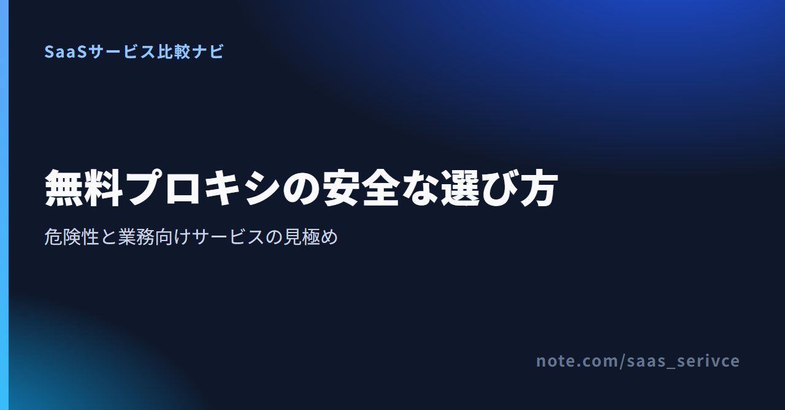
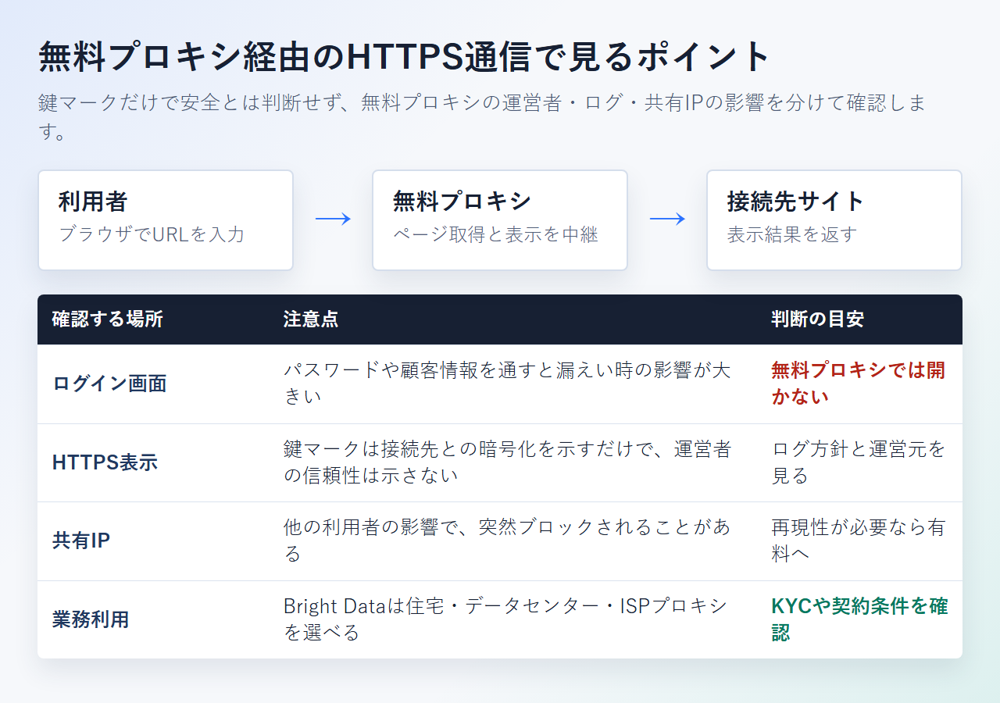
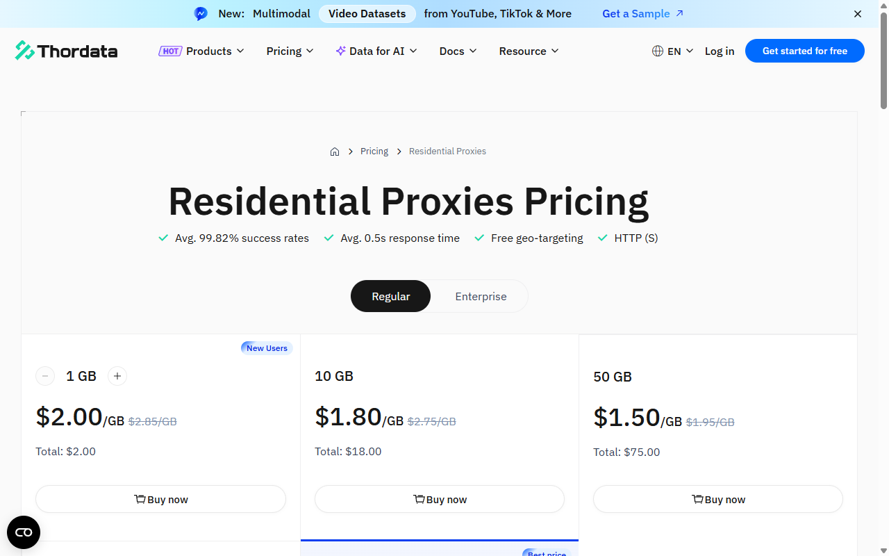

無料プロキシサーバーは安全？種類・危険性と業務向け有料サービスの選び方
プロキシサーバーは、Webサイトへの接続を別のサーバーで中継し、接続元のIPアドレスを置き換える仕組みです。
無料サービスは種類によって中継する範囲も信頼性も異なります。この記事では、日本IPの探し方、安全面の注意、有料サービスへ切り替える目安を紹介します。
無料プロキシサーバーの種類と向いている使い方
無料だから一律に危険とは限りません。ただし、ログイン情報や顧客情報を扱う場面では避けます。公開ページを一度見るだけなら候補になりますが、業務データを扱うなら有料サービスを選ぶのが基本です。
URLを開くだけならWebプロキシ、IPとポートを自分で設定するなら公開リストです。端末全体の通信を中継したい場合はVPN、地域指定や継続処理には商用プロキシが候補になります。
- Webプロキシ：ブラウザの1タブで使う
- 公開IPリスト：接続先を自分で設定する
- VPN：端末全体の通信を中継する
- 商用プロキシ：地域指定や自動処理向け
無料のWebプロキシは、サイト上の入力欄に閲覧先のURLを入れる形式です。ソフトを入れずに使える一方、通常はその画面内の閲覧だけを中継します。ほかのアプリやブラウザ全体の通信まで保護するものではありません。
公開IPリストには、接続先となるIPアドレスとポート番号が並びます。ブラウザやOSに自分で設定するため、URL入力型とは操作方法が別です。接続先の提供者、稼働状態、ログ方針が分からないものも混在します。
VPNは端末からVPNサーバーまでの通信をまとめて扱う仕組みです。プロキシと似て見えますが、対象となる通信の範囲が違います。無料VPNも、提供元や利用条件を確かめずに業務へ使うべきではありません。
仕事でログイン情報や顧客情報を扱うなら、無料サービスは避けるのが無難です。地域指定と継続利用が必要な場合は、Bright DataとThorDataの契約条件を比べてください。
登録ページでは、対象製品の月5,000無料クレジットと、プロキシ向けの試用条件を分けて確認できます。プロキシ製品は月5,000無料クレジットの対象外です。
日本で使える無料プロキシサイトの探し方
「日本語で開けるサイト」と「日本IPを選べるサイト」は別です。接続国、日本サーバーの有無、運営者、利用規約、ログ方針を順に確認します。
- URL入力型か、IP・ポート設定型か
- 日本IPを選べるか、日本から使えるだけか
- 運営会社と問い合わせ先が明記されているか
- 通信ログとCookieの扱いが書かれているか
- ダウンロードや拡張機能を要求されるか
検索結果には、ブラウザからURLを入力する無料プロキシが並びます。ただし、画面が日本語でも、日本のIPアドレスを選べるとは限りません。
日本IPが必要なら、利用時に接続地域の選択欄を開き、Japanや日本があるか確かめます。選択肢が見つかっても、同じIPを次回も使えるとは限りません。共有IPはほかの利用者の影響で接続先から遮断される場合もあります。
次に、運営会社の名称と連絡先を探します。利用規約やプライバシーポリシーがあっても、ログの保存期間や利用目的が書かれていなければ、認証情報を預けてよいか判断する材料には足りません。
「無料で使うために専用アプリを入れる」「ブラウザ拡張機能へ広い権限を与える」といった条件も要注意です。公開ページを1回見るだけなら、求められた権限が本当に必要かを考えます。不要なダウンロードを促されたら、その場で止める選択も必要です。
無料サイトの速さや日本IPの数は変わります。古い紹介記事の記載だけで決めず、使う時点の接続国と規約を読み直してください。
無料プロキシで注意したい通信・ログ・停止リスク
無料だから一律に危険とは限りません。ただし、運営主体やログ方針が分からない接続先へ、認証情報や業務データを通すべきではありません。
- ログイン情報、カード情報、APIキーを入力しない
- 顧客情報、契約書、社内画面を開かない
- 共有IPの遮断や突然の停止を見込む
- 速度より、同じ条件を再現できるかを見る
- HTTPSの鍵マークだけで運営者を信用しない

URL入力型のWebプロキシでは、利用者が指定したページをプロキシ側が取得し、結果を画面へ返します。このとき、利用者から無料プロキシまでと、無料プロキシから接続先までを分けて考える必要があります。
ブラウザにHTTPSの鍵マークが出ていても、それだけで無料プロキシの運営者やログ管理まで信用できるわけではありません。方式によってプロキシ側から見える情報も異なります。パスワードやカード番号を入力する画面では使わないほうが安全です。
共有IPには、自分以外の利用履歴も積み重なります。接続先がそのIPを遮断すると、昨日まで開けたページへ突然つながらなくなることがあります。無料の接続先を入れ替えるたびに、表示内容や接続地域が変わる可能性もあります。
問い合わせ先がなければ、停止原因の切り分けも自社で行います。共有IPを替えるたびに接続条件が変わるため、復旧後の結果が同じとは限りません。
業務用へ切り替える場合は、Bright Dataの製品ページで認証方法と接続地域を確かめます。プロキシ種別や契約条件も確認できます。
無料で足りる個人利用と避けたい業務利用
個人情報を入力しない短時間の公開ページ閲覧なら、無料で足りる場合があります。ログイン、決済、顧客データ、定期取得を伴う仕事には向きません。
- 無料で足りる可能性：公開ページを一度見る
- 無料で足りる可能性：接続経路だけを試す
- 無料を避ける：社内アカウントへログインする
- 無料を避ける：EC価格や広告表示を定期取得する
- 無料を避ける：顧客情報やAPIキーを扱う
- 無料を避ける：同じ国や都市のIPを再利用する
判断の境目は、失敗したときに何を失うかです。公開ページが開かなければ、閲覧を中止するだけで済みます。社内アカウントの認証情報が漏れた場合は、パスワード変更やアクセス履歴の調査が必要です。
スクレイピングに使う場合は、接続の安定性だけでなく、対象サイトの利用規約やアクセス条件も確認します。技術的につながることと、許可された方法で取得できることは別です。短時間に大量のリクエストを送れば、接続元を問わず相手側へ負荷をかけます。
地域制限のあるコンテンツも同様です。日本IPや海外IPへ切り替えられても、サービス側の規約に反する使い方が認められるわけではありません。
無料から有料へ切り替える5つの目安
無料プロキシでは足りない条件が出たら、必要な機能を基準に有料サービスを比べます。目安は次の5つです。
- 認証が必要：運営会社と契約条件を見る
- 顧客データを扱う：問い合わせ窓口を見る
- 自動取得する：認証方式とIP切替を見る
- 結果を再現する：固定IPの有無を見る
- 地域を指定する：国・都市の選択範囲を見る
有料プロキシでは、住宅用、ISP、データセンターなどの種類を選べます。名称だけで決めず、接続先が求める条件に合わせて選びます。たとえば、社内テストで固定IPが必要な場面と、公開情報の地域差を調べる場面では、適したプロキシの種類が異なります。
料金は、データ量に応じたGB課金と、IP数に応じた課金が中心です。毎月の取得量が読めないうちは、月額契約だけでなく従量課金の最低購入量も見ます。安い単価を得るために大量購入すると、余った容量や返金条件が負担になるためです。
無料枠の表示も製品単位で読み分けます。APIの無料リクエストがあっても、住宅用プロキシの通信量へ転用できるとは限りません。「無料トライアル」だけで判断せず、対象製品と付与量を確かめます。有効期限や支払い方法の登録要否まで見れば、誤解を避けられます。
日本から契約する場合は、対応通貨と支払い方法も確認します。カードブランドの記載がなければ、日本発行カードを使えるとは断定できません。海外サービスの消費税や経理処理は、契約主体に応じて税理士に確認してください。
製品ページでは、住宅用・ISP・データセンターの違いと、従量課金を含む料金体系を選ぶ前に確認できます。
業務向けの有料プロキシサービス2社
住宅用プロキシのKYCに対応でき、日本語の製品情報を重視する事業者にはBright Dataが候補です。少量の住宅用を従量課金で始めるならThorDataも比べます。無料枠、日本語対応、支払い、返金条件まで確認します。
Bright Data

住宅用、データセンター、ISP型のプロキシを扱うサービスがBright Dataです。公式の日本語サイトと日本語料金ページがあり、各製品の違いとUSD単価を日本語で読める点が特徴です。ただし、管理画面がどこまで日本語に対応するかは明記されていません。
- 向く場面：住宅用のKYCに備えられ、複数の回線種別を比べたい事業者
- 住宅用の料金：従量課金は$8/GB。月額プランは$499から
- ほかの料金：データセンターは$0.6/GB、ISPは$8/GBの従量課金あり
- 無料枠・試用：月5,000無料クレジットはプロキシ対象外。新規登録時のプロキシ向け一回限り$2クレジットは7日間有効
- 支払い：クレジットカード、PayPal、Alipay、Payoneer、Google Pay、Apple Pay
- 返金：支払い済みのSubscription Feesは取り消し・返金不可
- 契約終了：固定期間のない契約は、書面通知を受領した暦月の末日で終了
プロキシ向けには、支払方法を追加すると$5のボーナスが付与されます。有効期間は30日間です。月5,000無料クレジットとは別枠なので、登録後に対象製品を取り違えないようにします。
利用方法によっては、住宅用ネットワークでKYCが必要です。登録企業や企業ドメインのメール認証、利用目的などの提出が関わります。追加の本人確認を求められる場合もあるため、利用開始日が決まっているなら審査にかかる時間を見込んでおきます。
日本市場向けの案内では、24時間対応のサポートを掲げています。一方、日本語のチャットやメールで応対するかは公開情報から判断できません。日本語ページの有無と、日本語で問い合わせられることは分けて考えます。
リンク先では、対象製品の無料枠とプロキシ向け試用条件を分けて見られます。住宅用を選ぶ場合は、KYCの条件もあわせて確認してください。
ThorData

ThorDataは、住宅用、Static ISP、データセンターのプロキシを提供しています。住宅用は1GBから選べる従量課金で、月額コミットメントはありません。少量から料金を見積もりたい場合の候補です。
- 向く場面：少量の住宅用を従量課金で始めたい仕事
- 住宅用の料金：1GBは$2/GB。購入量に応じて$0.65/GBまで段階的に低下
- ISP・データセンター：1IPは$1.50/IP。500IP以上は$0.75/IP
- 無料枠・試用：固定の無料プランなし。プロキシは試用申請ボタンがあるものの、付与量と日数は明記なし
- 日本語：公式サイトの言語切替に日本語なし。管理画面UIは公開情報で確認できず
- 支払い：対応するカードブランド、PayPal、請求書払いは公開情報で判断不可
SERP APIには、7日間で500リクエストまでの無料トライアルがあります。これはプロキシ製品の無料枠ではありません。住宅用やISP型を試したい場合は、各製品ページの申請条件を別に見ます。
製品品質に問題があった場合の返金申請は、非暗号資産決済の初回購入が対象です。購入から7日以内に申し出る必要があります。使用量はパッケージ容量の30%以下かつ2GB以下に限られ、1顧客につき1回のみです。
管理画面の日本語UIは公開情報で確認できません。問い合わせ窓口はメールですが、日本語で応対するとの記載もありません。英語で料金や返金条件を確認できる体制が必要です。
ThorDataのページでは、住宅用の購入量ごとの単価と、各プロキシ製品の試用申請窓口を確認できます。
無料プロキシサーバーのよくある質問
日本IPの選び方とVPNとの違いを、迷いやすい点に絞って説明します。
日本IPを無料で使えるサイトはありますか
無料サイトの中には接続国を選べるものがあります。ただし、日本語で表示されるサイトが日本IPを提供しているとは限りません。国選択画面にJapanがあるか、実際の接続先が日本になっているかを利用時に確かめます。
同じ日本IPを継続して使える保証もありません。ログイン状態や地域別表示を繰り返し調べるなら、地域指定と接続条件が明記された商用プロキシを検討します。
無料プロキシと無料VPNは何が違いますか
Webプロキシは、入力したURLやブラウザの一部通信を中継します。VPNは、端末からVPNサーバーまでの通信を広く扱う点が、Webプロキシとの違いです。
どちらも「無料」というだけで安全性は決まりません。提供元、ログ方針、対象となる通信、必要な権限を見て選びます。
まとめ｜無料で足りる範囲を決めてから選ぶ
最後は、使う回数と扱う情報で決めます。
- 公開ページを一度見る：接続国と中継範囲を見て無料候補を選ぶ
- 同じ条件で繰り返す仕事：Bright DataやThorDataを比べる
住宅用のKYCに備えられる事業者はBright Data、少量の住宅用を試すならThorDataが比較候補です。
料金ページでは、月5,000無料クレジットの対象と、プロキシ製品の料金・試用条件を分けて確認できます。